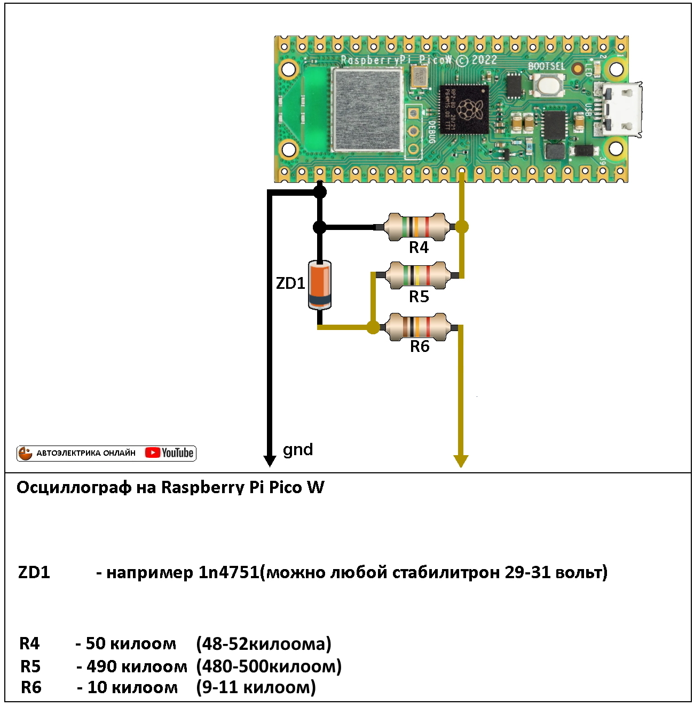
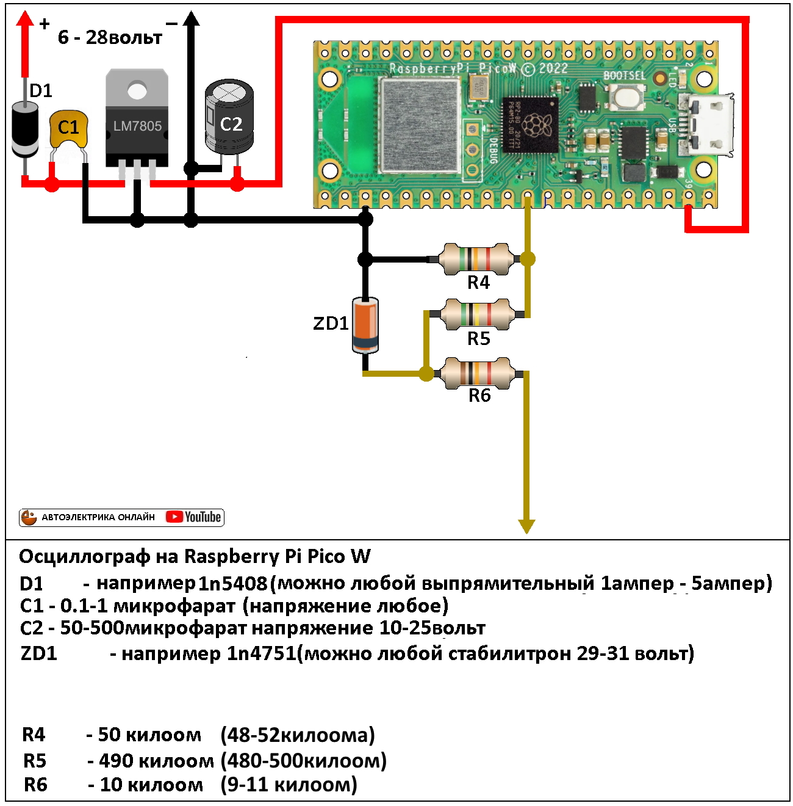
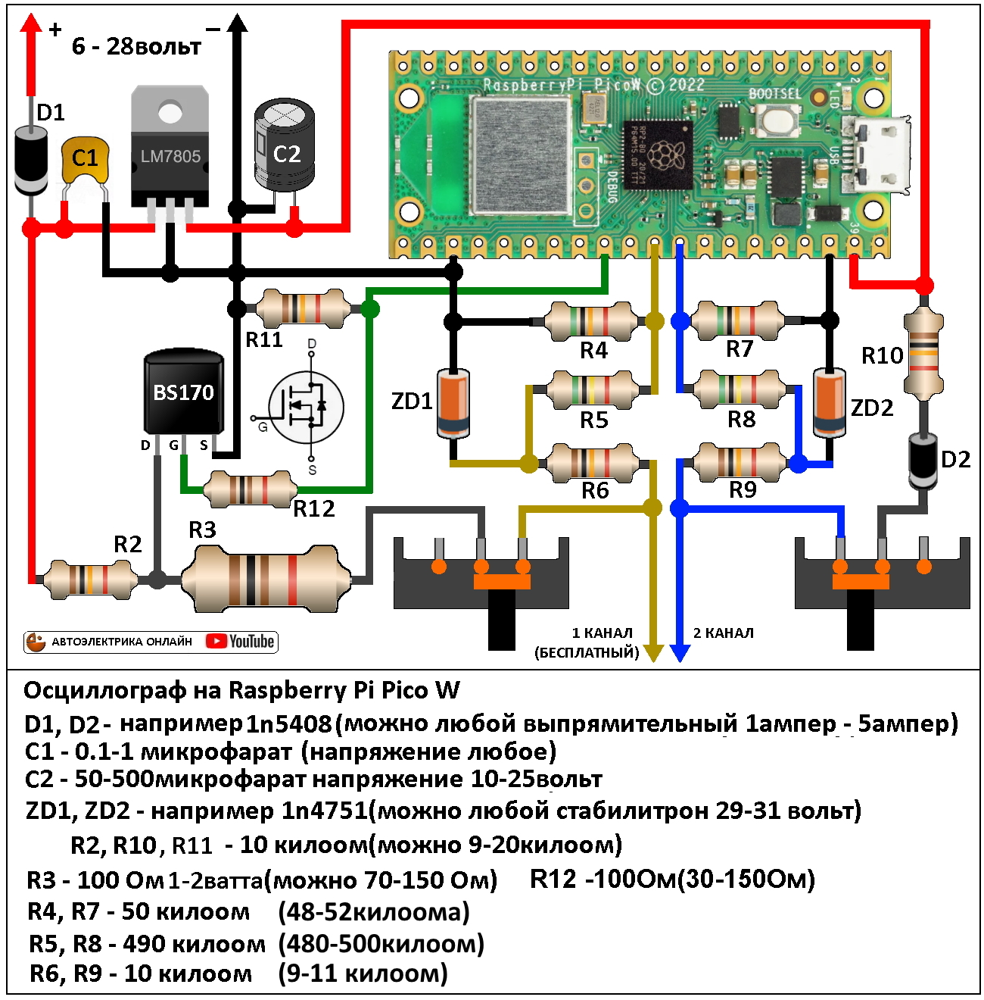

Шаг первый
Подключаем к пк и заливаем прошивку
Для загрузки прошивки в Raspberry Pi Pico W не нужны специальные программы и программаторы, просто зажимаем кнопку на плате и подключаем к компьютеру. На компьютере появляется новый диск как будто мы подключили флешку и войдя в нее мы видим такие файлы, не трогаем их, а просто перетаскиваем прошивку(прошивка лежит в загрузках на этом сайте) внутрь этого диска к остальным файлам. Как только прошивка окажется внутри полностью диск отключится и это означает что прошивка завершена. Выдергиваем с платы юсб разьем и втыкаем вновь но кнопку уже не держим, на плате должен мигать светодиод это значит идет поиск вай фай соединения. Далее скачиваем с плеймаркета приложение Scoppy Oscilloscope(бесплатное на один канал) и подключаемся к вай фай точке с названием Scoppy, вводить код не надо.
Шаг второй
Минимальная схема для работы осциллографа

Для работы осциллографа на один канал на напряжении до 33 вольт нам нужно только три детали сама плата Raspberry Pi Pico W и два резистора которые нужны чтоб уменьшить входное напряжение в 10 раз. Питать плату можно от повербанка или компьютера через юсб разьем. Предупреждение в таком виде схема не защищена от скачков напряжения от моторов, обмоток реле, соленоидов и пр. не рекомендую данную схему использовать на автомобиле, в третьем шаге добавим защиту.
Шаг третий
Минимальная схема для работы осциллографа с защитой
Для работы защиты нам необходим резистор и стабилитрон, при превышении напряжения больше 30 вольт стабилитрон откроется и скинет на массу избыток. Питание у нас по прежнему от юсб разьема, в следующем шаге сделаем от акб автомобиля.
Шаг четвертый
Добавляем возможность работы от акб автомобиля
Чтоб была возможность работы от акб автомобиля необходимо понизить напряжение до 5 вольт, этим будет заниматся линейный стабилизатор на микросхеме L7805 и двух конденсаторах, так же добавим диод для защиты от переполюсовки. Ток потребления осцилографом около 200 милиампер, стабилизатор расчитан работать от 30 вольт с нагрузкой до 1 ампера, так что стабилизатор справится даже без радиатора. Минус теперь подключается общий для питания и для осциллографа не нужно его подключать отдельно, просто подключаем щуп куда либо и снимаем сигнал.
Шаг пятый
Добавляем второй канал
Осциллограф у нас двухканальный так что давайте добавим второй канал, второй канал полностью похож на первый те же детали. Для активации второго канала необходимо купить полную версию программы Scoppy Oscilloscope в плеймаркете, но для России такое действие невозможно, зайдите на мой телеграмм канал задайте вопрос, эту проблему решали разными способами.
Шаг шестой
Добавляем генератор прямоугольных импульсов
В осциллографе есть генератор на котором можно выставить любую частоту от 10 герц до 10 килогерц, данный генератор можно применять для проверки и калибровки спидометров, тахометров, проверки вентиляторов охлаждения с ШИМ блоками на 50% мощности и пр. Генератор работает так: сначала подается слабое питание от акб автомобиля затем оно просаживается до нуля с помощью транзистора, для отключения генератора от щупа установлен ползунковый переключатель. Для защиты от короткого замыкания стоит мощьный резистор на 100 Ом на входе. У генератора есть странная особенность останавливатся в работе как с подачей плюса так и минуса надеюсь эту особенность исправят в будующих версиях, так же хотелось чтоб было регулирование скважности ШИМ, напишите разработчикам может мы их уговорим и они поправят.
Шаг седьмой
Добавляем подтяжку 5 вольт
В автомобиле часто сигналы управления бывают минусовые, то есть или нет сигнала или масса, для просмотра таких сигналов необходима подтянуть слаботочное питание к щупу тогда минус который появляется в виде сигнала будет это напряжение просаживать и мы увидим сигнал. Для подтяжки используем 5 вольт которые подаются на плату, чтоб уменьшить ток поставим резистор, а диод поставим для защиты питания от импульсов. Все это будет подключать ползунковый выключатель размещенный на плате.
Шаг восьмой, финальный
Добавляем индикатор питания

На плате есть светодиод который моргает при поиске подключения вай фай и светит когда с подключением все в порядке, желательно сделать окошко для того чтоб видеть данный светодиод. Так же если есть желание можно сделать светодиод который будет показывать что питание подано и полярность его правильная. Для индикатора возьмем любой светодиод и резистор, подключаем по схеме и индикатор работает, данное усовершествование хоть и простое но может спасти немало нервов в работе.
Сайт принадлежит автору ютуб канала "Автоэлектрика онлайн", вопросы, предложения, донаты приветствуются!
Все контакты тут!